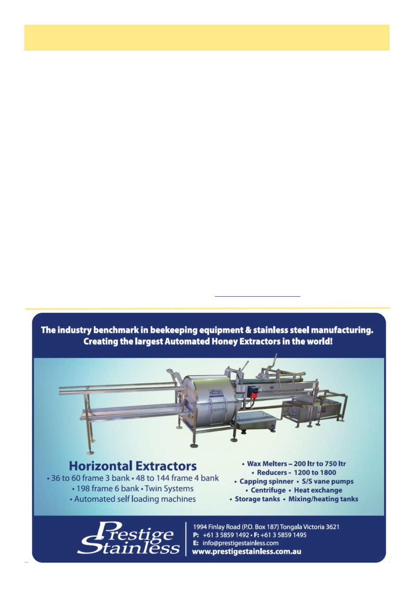

August 2026
9
(Continued from page 8)
cerns, and hear directly from the VAA about what is
happening on their behalf, from engagement with gov-
ernment through to industry developments. The idea is
not another layer of formality, but simply a standing
invitation to come and be part of the conversation.
Training is another strong theme. Rather than dupli-
cating what clubs already do so well, the subcommittee
wants to help clubs share what they already have –
training materials, experienced mentors, and guest
speakers willing to travel and share their expertise – so
that no club has to do it alone. Plans are underway to
build a list of subject matter experts across specialist
topics, from queen rearing to varroa management, that
any affiliated club can call on. A complementary list of
guest speakers is also taking shape, giving clubs an easy
way to bring fresh faces and new topics to their meet-
ings.
Underpinning all of this is a clear-eyed recognition
that the VAA‘s role is to support recreational beekeep-
ers, not to run their business for them. Mentoring, for
instance, was discussed at length, with firm agreement
that this is best led at the club level, where relationships
and local knowledge matter most. The VAA‘s job is to
help connect the dots – offering advocacy, resources
and a forum for collaboration – while leaving each club
free to do what it does best in its own community.
A MESSAGE TO OUR CLUBS
If there is one message the Recreational Subcommit-
tee wants every affiliated club and branch to hear, it is
this: the VAA sees you, values you, and wants to hear
from you. Whether your club has 200 members or 12,
whether you meet monthly in a hall or catch up infor-
mally over a shared apiary, the work you do to keep
beekeeping accessible, social and sustainable in your
community is a real strength of the recreational sector
of our industry.
Over the coming months, you can expect to hear
from the subcommittee directly – an introduction, an
invitation to connect, and genuine interest in what is
working well in your club and where the VAA can help.
There is no expectation that every club will want the
same things. Some may simply welcome being kept in
the loop on what the VAA is doing on members‘ behalf.
Others might be keen to tap into the growing list of
guest speakers and subject matter experts, or in shaping
the next Recreational Conference. All are welcome.
This is, by design, a deliberate initiative – one that
starts small, listens carefully, and grows through genu-
ine relationships rather than top-down direction. But
the intent behind it could not be clearer: Victoria‘s rec-
reational beekeeping sector are central to the one home,
one voice and one guardian role the VAA plays in our
state.
If you would like to get in touch with the Recreational
Subcommittee, share what your club is doing, or simply
find out more, reach out via your branch or affiliate
contact – we would love to hear from you. Contact
Growing Together, cont’d